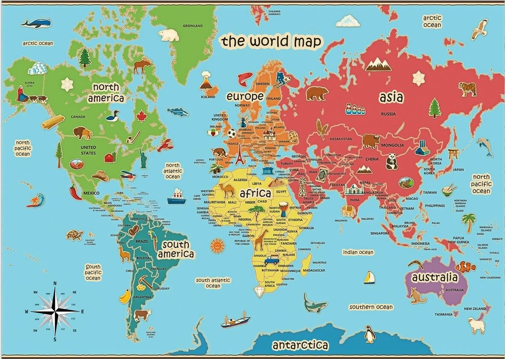

GeoLearn
Descripción
Nuestra página web GeoLearn proporcionará a los usuarios una plataforma que les permita aplicar los conocimientos sobre geografía adquiridos al largo de su vida para poder ponerlos a prueba así como reforzarlos y mejorarlos de forma interesante y divertida.
Objetivos
Para este proyecto proponemos la creación de una página web interactiva donde los usuarios puedan aprender
geografía, por lo tanto planteamos los siguientes objetivos
Usuarios
La web desarrollada estará dirigida a usuarios de educación primaria y secundaria, aunque no se descarta la posibilidad de que adultos interesados en la geografía o profesores también la utilicen. Un primero posible usuario, el estudiante que está cursando o ha cursado geografía como parte del aprendizaje obligatorio y busca un recurso adicional para estudiar o mejorar sus conocimientos. Otro potencial usuario de la aplicación sería el profesor que utiliza la web como un recurso complementario a sus clases. Este usuario estaría interesado en métodos de enseñanza basados en la tecnología para captar la atención de los alumnos y aumentar su retención de información.

Para definir al usuario principal de la aplicación, construiremos un buyer persona: Andrea Apasionada. Hemos elegido el nombre Andrea porque es un nombre neutro que puede ser utilizado por cualquier género. Andrea es una persona de entre 8 y 14 años, interesada en la geografía. Está cursando o ha cursado geografía y quiere seguir mejorando sus conocimientos. Está acostumbrada a la tecnología en su día a día, ya que ha crecido en un mundo donde la tecnología está presente de forma omnipresente. El apellido, Apasionada, indica que es una persona dispuesta a dedicar un esfuerzo para profundizar en su aprendizaje.
Funcionalidades
El usuario podrá utilizar la página para aprender sobre geografía, específicamente países y capitales. Esto lo podrá hacer a partir de una sección de estudio y una de prueba. Se permitirá ajustar la dificultad y la extensión de los conocimientos a los que se quiere enfrentar el usuario.
Ofreceremos un seguimiento de los conocimientos que ha adquirido el usuario durante el uso de la aplicación proporcionando el progreso de cada nivel a la vista previa.
Habrá un sistema de puntos que cuantificará los conocimientos del usuario y permitirá desbloquear nuevos niveles. Al estudiar lecciones o realizar pruebas se recompensará al usuario con más puntos, haciendo la aplicación más entretenida o atractiva.